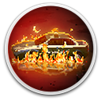

 RIOT - Civil Unrest
Details
 |
|
| Playtime | Not Played |
| Last Activity | Never |
| Added | 20/12/2024 16:41:22 |
| Modified | 17/05/2025 23:43:23 |
| Completion Status | Not Played |
| Library | Gog |
| Source | GOG |
| Platform | PC (Windows) |
| Release Date | 06/02/2019 |
| Community Score | 47 |
| Critic Score | 55 |
| User Score | |
| Genre | Indie Simulator Strategy |
| Developer | IV Productions Leonard Menchiari |
| Publisher | Merge Games |
| Feature | Co-Operative Multiplayer Single Player |
| Links | Official Steam GOG Twitch |
| Tag | 2D Crime Historical Modern Multiplayer Pixel Graphics RTS Simulation Strategy Violent |
Description
As the world’s economical crisis deepens and inequality tears the very fabric of society the discontentment of the masses manifests itself in violent public disturbances and civil disorder.
RIOT – Civil Unrest is the highly anticipated real-time riot simulator that places the player right in the heart of some of the world’s most fractious clashes. Campaigns include: Indignados (Spain), Arab Spring (Egypt), Keratea (Greece) and NoTAV (Italy). Seventeen single level scenarios include Rome, Oakland, Paris, London and Ukraine.
RIOT – Civil Unrest’s creator, Leonard Menchiari, experienced rioting first-hand at the NoTAV protests in Italy. He created the game to tell the stories and express the feelings experienced during these clashes. What triggers the crowd to behave with such anger and aggression? Often outnumbered, what does a police officer feel like during the conflict? RIOT – Civil Unrest presents the player with the opportunity to experience both sides of the fight - a fight in which there really are no winners. Who is right and who is wrong? Experience RIOT – Civil Unrest and draw your own conclusions.
RIOT – Civil Unrest is the highly anticipated real-time riot simulator that places the player right in the heart of some of the world’s most fractious clashes. Campaigns include: Indignados (Spain), Arab Spring (Egypt), Keratea (Greece) and NoTAV (Italy). Seventeen single level scenarios include Rome, Oakland, Paris, London and Ukraine.
RIOT – Civil Unrest’s creator, Leonard Menchiari, experienced rioting first-hand at the NoTAV protests in Italy. He created the game to tell the stories and express the feelings experienced during these clashes. What triggers the crowd to behave with such anger and aggression? Often outnumbered, what does a police officer feel like during the conflict? RIOT – Civil Unrest presents the player with the opportunity to experience both sides of the fight - a fight in which there really are no winners. Who is right and who is wrong? Experience RIOT – Civil Unrest and draw your own conclusions.